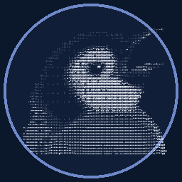

ERROR / 404
404
Parece que este pingüino se perdió.
La página que buscas no existe o cambió de dirección. Pero PenguSpeak sigue esperándote en casa.

PenguSpeak UN PINGÜINO FUERA DE RUTAERROR / 404
La página que buscas no existe o cambió de dirección. Pero PenguSpeak sigue esperándote en casa.